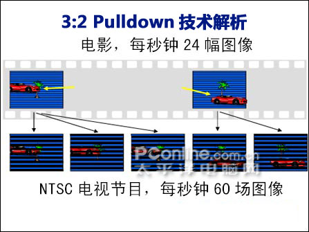

deinterlace 隔行 progressive 逐行 3:2pulldown
3:2/2:2 Pull down模式基于逐行扫描技术上进行的，针对以电影胶片为最初拍摄素材媒介的NTSC视频软件的一种视频信号再生技术。大部分的DVD电影和其他以视频信号媒体记载的电影的播放都是先经过胶片影像到视频信号的转换。原来的使用电影胶片拍摄的过程中拍摄速度是24帧/秒。在电影院播放时按每格放2次的原理实现48帧/秒的速率，这就是实现2:2Pull Down对应模式。另外，由于液晶电视常规的屏幕刷新频率为60Hz，播放DVD的时候按照第一格分两场，第二格分三场，第三格分两场，第四格分三场的顺序转换成60场（30帧）/秒的长度，但由于采用的是隔行扫描技术，这60场都是不完整的262.5线的图像，而且每第2、3个帧都会出现图像重叠混淆的情况，使图像的细节模糊甚至丢失。并且最终的图像实际清晰度只有262.5线。在采用3:2 Pull Down逐行扫描技术时，变换后产生的每一个场都是完整的带有483扫描线的图像，而且每播放的是60场与图像帧一样的完整图像，没有任何细节被丢失或模糊化，全程的图像清晰度均为483线。
模拟电视时代的3:2/2:2 Pulldown技术
要想弄清楚24P的问题，我们还要从模拟电视时代说起。电影每秒钟由24帧图像组成，在放映的时候，经过技术处理，一般显示为48Hz或72Hz，因此我们能够看到动作连贯的画面。
在模拟电视时代，电视里看到的电影则有所不同。在美国、日本以及我国的台湾省，电视是NTSC制式的，每秒钟扫描频率是60Hz，而在我国，电视节目是PAL制式的，每秒钟的扫描频率为50Hz。这两种标准，都是隔行扫描的。电影要在电视上播出，需经过一番比较复杂的技术处理。
以NTSC节目为例，电影的24幅图像，要分配成NTSC电视节目的60幅图像，电影的第一幅图像，分配到电视节目的1-3幅图像中，电影的第二幅图像，分为为电视节目的4、5幅图像，依此类推，电影的图像，按3幅-2幅-3幅-2幅的顺序交替分配到电视节目的60幅图像当中。这就是我们常说的3:2 Pulldown技术。

对于PAL节目，处理比较简单，电影的每幅图像，在电视节目播出时，重复显示一次，24幅电影图像，在电视机上以每秒钟48幅图像显示出来，这种技术就成为2:2 Pulldown技术。由于PAL电视节目扫描频率为50Hz，因此PAL制电视播放的电影，播放速度要比真正电影胶片快4%，伴音的音高略高，但是普通观众难以察觉。
DVD时代的逐行扫描技术
上面提及的3:2/2:2 Pulldown技术，其实我们忽视了一个环节，电影转换成电视节目后，还有一个处理为隔行信号的问题，也就是说，模拟电视时代，我们在电视中看到的电影节目，都是经过处理过的隔行扫描信号。进入DVD时代，这种情况发生了改变，逐行扫描技术出现了。

DVD时代出现逐行扫描
DVD属于10年前的技术，从DVD本身信号的记录来看，属于数字技术，但是从DVD和电视机的连接看，最初都是AV复合、S端子或色差连接，仍属于模拟技术范畴。带有HDMI接口的DVD，也是近年来才出现的，而且不算很普及，只有少数高档DVD机才具有。
支持逐行扫描带HDMI接口的DVD机
随着逐行扫描DVD的出现，也出现了逐行扫描电视机，这种电视机在接收逐行扫描的电视信号时，以NTSC信号为例，先要将60Hz的隔行电视信号，还原为电影原始的24幅完整图像，再按3:2 Pulldown的方法，分配成60幅逐行扫描图像显示出来。
DVD方面，最初的DVD也是用上述的方法处理逐行扫描信号的。而实际上，DVD光盘上记录的电影信号，可以认为都是24P的。早期的DVD无法直接对24P信号直接处理，还要经过一系列的数模/模数转换，或者24P-60i-24P-60P的繁琐过程。后期的DVD，随着芯片技术的发展，逐行扫描DVD可以做到24P-60P的最简洁处理。
数字高清时代 24P电影时代早该到来了
高清电影本身可以认为都是1920×1080/24P的。进入高清时代后，和模拟时代最大的不同还由两个方面，一方面，电视机已经进入全高清时代，具有1920×1080的物理分辨率，也就是常说的Full HD或1080P电视，另一方面，HDMI接口已经普及，信号传输已经实现全数字化，进入了真正的数字时代。
最初的HDMI只能输出或输入1080/50i/60i信号，从技术角度讲，只要电视机的电路足够好，其效果和1080P是一样的。再进一步的发展，HDMI已经能够输出和接收1080P信号了，其频率包括50和60Hz。
但是我们知道，电影原始图像只有24P，无论输出为50P还是60P，都要经过3:2/2:2 Pulldown技术。如果高清播放器材比如蓝光播放机的电路不够好，即使输出1080P信号，可能不如电路水平高的1080i信号效果好。如果高清播放设备方面直接输出电影的24P信号，平板电视直接接收24P信号后由电视机的电路处理并显示出来，或许更好。
松下蓝光DVD播放机DMP-BD30，支持24P信号输出
24P信号输出，首先出现在蓝光播放机和HD DVD播放机上，目前已经成为蓝光播放机的基本功能。采用8634以上级别芯片的高清播放机，也支持24P输出，随后24P电视也应运而生。
支持24P电影模式播放的液晶电视和等离子电视
对于高清播放设备，输出24P信号实际对技术的要求更简单，省略了很多环节。对于平板电视而言，和1080i信号比，也省略很多电路，24P电影模式播放将成为近期中高端平板电视的新看点。除了松下近期发布这几款平板电视新品外，已经确认具有24P电影模式播放功能的液晶电视还有索尼的W380A系列和V440A系列；LG的50Y系列；飞利浦的7403系列和5403系列。
当然，还有很多品牌和型号目前还不能确定是否具有24P电影模式播放功能，我们希望各厂商能够为我们提供相关信息，PConline数字家电频道会以最快速度通报给广大网友。
首先要看interlace的信号是怎么得来的，一种是真正的interlace的信号，像一般的电视信号，在录制的时候就是interlace的，这种信号是不可能完全deinterlace的，也就是说不可能得到完整的progressive的信号，因为丢失的信息是不可能完全重建的。另一种是，film-based的TC得来的信号，用3：2pulldown/IVTC就可以完全重建progressive的信号。
接下来澄清一个问题：deinterlace 指的是什么？如果是指把interlace的信号还原成progressive的信号，那么在对待电影的片源来说就应包括IVTC/3:2pulldown，或者说3:2pulldown是一种deinterlace。一般来说，如何把interlace的信号转化成progressive的信号呢，有以下基本方法：
line doubling: 每一行都重复一遍，损失一半的垂直分辨率
bob，interpolate：插值的方法。没有信号的行用相邻的两行插值得到。适用于一般的电视信号，比如，用电视卡在计算机上看电视。
weave：把两祯叠加后输出（一祯的奇数行和下一祯的偶数行叠成完整的一祯，并没有对每一祯进行处理，其实等与do-nothing，即什么也没做。适用于基于电影的DVD，前提用3：2pulldown/IVTC去掉加入的祯。
针对真正的interlaced的信号还有更高级的方法如：
Motion Adaptiveness：运动图像用bob，静止图像用weave。
Motion Compensation：在weave用得多，bob用得少的情况下，估计物体的移动，构造每一祯。这个比较复杂，也比较高级，一两句说不清楚。
orbitlee提到的各种算法大多是基本算法的演变。
所以，对于film-based 的经TC得来的DVD mpeg2 来说，deinterlace不是问题，DVD有专门的标示用来做3：2pulldown，然后把对应祯叠加得到progressive 24fps的信号，按比例输出到60、72、85hz的显示器上。这其中还有winDVD借用的philips的技术：Trimension™ DNM (Digital Natural Motion) ，充分利用刷新频率，将24祯再变换成60祯（不是简单的重复）而是构造新的祯。
对于HDTV，即便是电影，我也不知道是TC的还是真正的interlaced的（一直找不到有关电视台播出的HDTV电影的资料，这是非常关键的一点，直接关系到deinterlace），如果是TC的那么按照DVD一样处理就行了，有区别的地方是HDTV是流媒体，是否能像DVD那样找出对应祯进行3：2pulldown（我记得以前看到过有关文章）。如果是truly interlaced，比如，各大电视台的黄金时间节目如CSI(1080i)等，即录制的时候就是1080i的，那么，deinterlace的算法就很重要了，在没有好的算法之前，一般来讲会用bob，画质可能会不如720p。在decoder设置上，truly
interlaced 电视信号是不宜用weave的。对于720p的信号，decoder是不应该去处理的，不存在选用bob或weave的问题。这其实还牵扯到另一个问题，1080i和720p哪个更清晰的问题。我个人认为，TC的1080i的信号经过IVTC和deinterlace肯定比720p的要好，不存在什么每祯540线的问题；而对于实时转播的电视信号来说，则1080i静态占优，720p动态占优。
综上所述，我不认为讨论基于电影(film-based)的用TC生成的NTSC信号的deinterlace有任何意义，任何一种decoder都应该能胜任，至少对DVD来讲。我们没有必要去告诉decoder用weave或bob，decoder应有算法自动识别的，除非对于HDTV的mpeg2不适用。不同的是其他性能，比如它们的容错性，即在信号有损失的情况下如何进行这个过程，或者在没有标示的情况下找对应祯的能力。从实验角度来说，如果是人工生成的标准信号，应该是没有区别的。对于truely interlaced的NTSC信号，我们也没啥可做的，用bob就好了。反过来说，如果你用weave出现拉丝，那说明你的片源是trully
interlace的，或者，可能是ivtc做得不好，没有去掉TC加入的祯，那么decoder就不支持代标示的HDTV的IVTC，也就是说HDTV的IVTC要靠decoder自己去判断哪些是人为加入的祯。
另外，仅作参考，根据avsforum的fans的经验和鉴别，Dscaler5和最新的nvidia的decoder对于DVD的mpeg2效果最好。对于后期处理，希望大家能好好利用ffdshow。还是那句话，显示设备是大家因该考虑和投资的主要考虑对象，对于没有好的显示设备来说，HDTV的意义并不很大，尤其是花很长时间下载，就更不划算了，好好优化DVD是正经，比如，如何把720x480的信号最优化地upscale到1280x720的显示设备上。等到大家都有好的显示设备时，hd-DVD也应该批量化了，到时候花钱买D版就是了。我不太清楚HDTV在现有的软硬件基础上有什么可优化的，请懂得人另开版面讨论，相信会有意思的多。还有就是有个会员提到的买椟还珠的问题，内容比形式更重要
IVTC
帧=Frame / 场=Field / fps=Frame Per Second / Film=电影胶片
电影原本是 24fps 的，在胶卷过带（Telecine）的时候，NTSC 制会经过 3:2 pulldown 转为 30fps。
也就是原本 1 2 3 4 四个 Frame，拆成 1o 1e 2o 2e 3o 3e 4o 4e，每个 Frame 拆成奇数扫瞄线组成的奇数图场（Odd Field）和偶数扫瞄线组成的偶数图场（Even Field）。重新组合如下（以 Odd Field First 的顺序）
每两个 Field 再重新组合成一个 Frame，就变成 [A][C][D][E] 五张 Frame。这样由原本的 4 张变成 5 张，4*6 = 24 => 5*6 = 30，就能从 24fps 转为 30fps。
在电视上看，电视因为是交错显示，所以看不到交错线。但是在计算机上看，计算机屏幕是循序显示，所以中间的 2o 3e -3o 4e 这两张 Frame 中的 Field 分别来自不同的 Frame，一起显示的话就会看到交错的现象。
但是 IVTC 检出不一定能做到 100%，遇到无法检出、判断的部分，Encoder 还是会以原本的 30fps 来压缩。所以我们会看到有些 DVD，是 Film（24fps）和 NTSC（30fps）混合的 DVD，又叫做 Hybird（混合）的 DVD，这个意思就是说，这张 DVD 内的画面，是 24fps 无交错，和 30fps 有交错两种型态互相混合的。
PAL 制则不一样，胶卷过带时是采用 2:2 pulldown，也就是仍然输出原本无交错的 Frame，但始将播放速度加快 4%，声音也一起加快 4%，提升为 25fps，所以理论上来说，PAL 很好处理，因为画面根本无交错，所以直接压缩即可。不过我在这里看到有朋友提到，PAL 的 DVD 还是有些是交错的，这点我就不明白是为什么了，可能是制作过程上有问题吧。（譬如说用 DV 去拍的影片，DV 大部分是交错式拍摄，张张都交错，是补不回来的）
DVD2AVI 的 Force Film 和 TMPGEnc 的 IVTC，两者的作法和使用的时机都不同，使用者要自己判断该用哪一种方法。如果有人拿 Film 率很低的片子用「Force Film」输出，得到惨不忍睹的结果，然后怪 DVD2AVI 的 "IVTC" 烂，那真是冤枉了 DVD2AVI 的作者。这些观念在作者的网页上都讲得很清楚。
节录当中的一段：
Forced FILM is based on RFF detection and frame decimation/duplication.
NTSC or PAL + Forced FILM ON -> garbage
FILM + Forced FILM ON -> synchronous 23.976 fps flawless FILM (equals to IVTC)
作者说，Force Film 是根据 RFF 旗标侦测和删除重复的 Frame。
NTSC（30fps）或者是 PAL 的讯源，如果开了 Force Film，得到的东西会是 garbage，垃圾。
如果片源是翻录的DVD，MPEG2码流中没有 RFF 旗标以供还原为Film ，用DeInterlace也只是模糊物体的边缘部分，是否有完美的办法呢？
而以DVD2AVI为代表的IVTC软件，就是利用这种加入在MPEG2码流中的flags快速的还原60场的MPEG2为23.976fps的原始Film信息。
如果假设FieldOrder=A时为：A1 A2 B1 B2 B1 C2 C1 D2 D1 D2
DeInterlace(even-odd)时顺序出现：A1 A1 | A2 A2 | B1 B1 | B2 B2 | B1 B1 | C2 C2 | C1 C1 | D2 D2 | D1 D1 | D2 D2
那么FieldOrder=B时则为：A2 A1 B2 B1 C2 B1 D2 C1 D2 D1
DeInterlace(even-odd)时顺序出现的是：A2 A2 | A1 A1 | B2 B2 | B1 B1 | C2 C2 | B1 B1 | D2 D2 | C1 C1 | D2 D2 | D1 D1 —— 因此有了“倒退的帧”